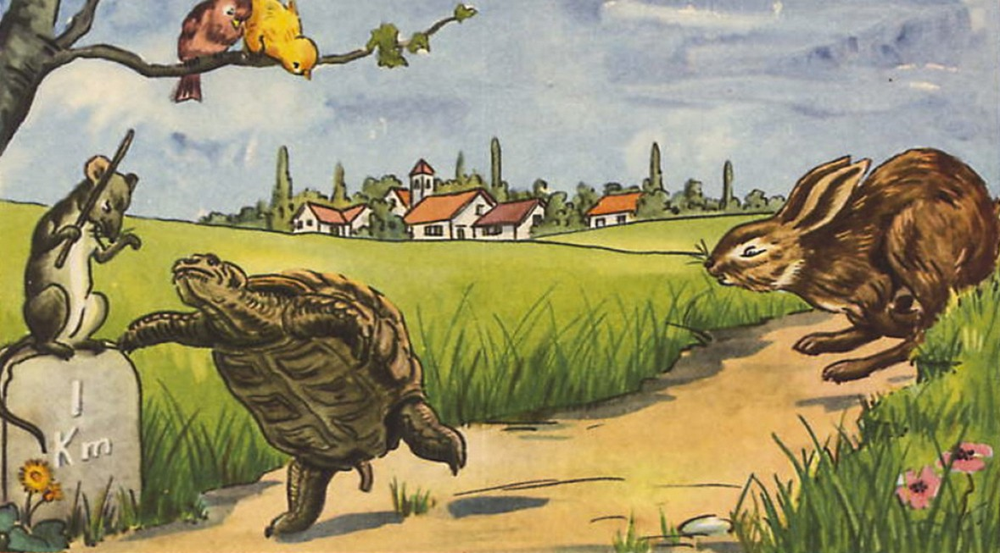
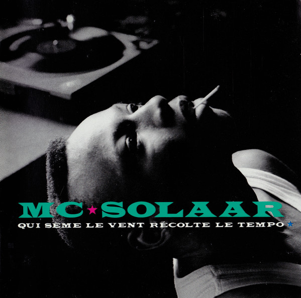
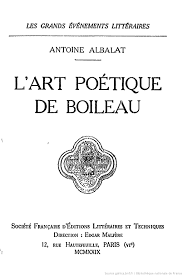
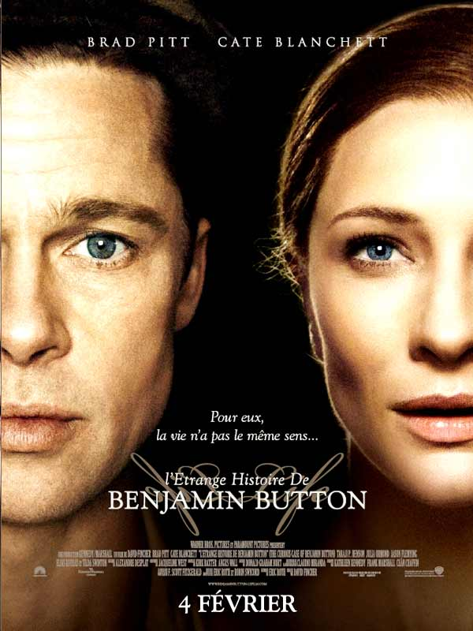
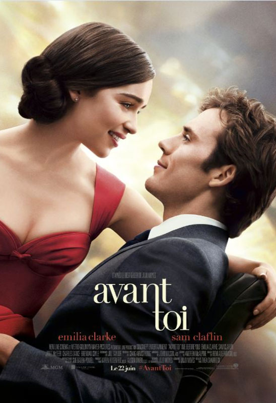
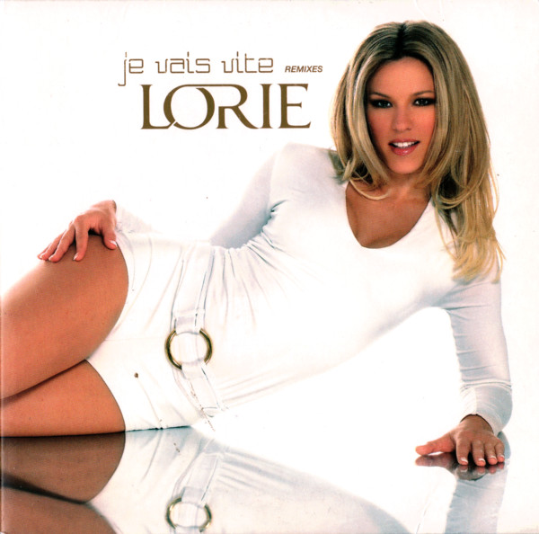
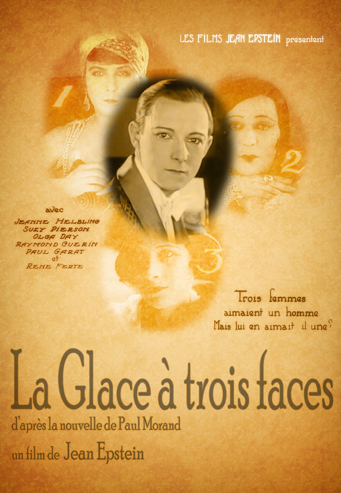

L’expression Carpe Diem signifie cueille le jour sans te soucier du
lendemain. Ce rythme de vie, souvent associé aux épicuriens se veut lent
et non dicté par le capitalisme. Ainsi beaucoup d’œuvres d’art prônent
cette lenteur positive, souvent associée à une qualité que la vitesse peut
envier à son anonyme. Ci suivent quelques exemples allant dans ce sens.
Terrasse du café le soir, Van Gogh, 1888
Voir plus +
Le lièvre et la tortue, Jean de la Fontaine, 1668

Voir plus +
Qui sème le vent récolte le tempo, Mc Solaar, 1991, Rap Français

Voir plus +
Nicolas Boileau, L'art poétique - Chant I, 1674

Voir plus +
ALLER A 100 A L’HEURE
La vitesse est également caractéristique de la jeunesse. De nombreux films
illustrent cette idée et sont même considérés comme les films cultes d’une
génération. «La vitesse et l’intensité ont toujours été associées à des
vies fulgurantes et exceptionnelles». Certains choisissent de vivre vite
et pleinement, de «vivre à 100 à l’heure», de «dépasser leurs limites». La
vitesse est ainsi perçue de manière positive et la lenteur est quant à
elle dévalorisée et souvent synonyme de vieillesse et d’ennui. Ci suivent,
un condensé de quelques exemples qui vont dans ce sens.
L’étrange histoire de Benjamin Button

Voir plus +
Avant Toi

Voir plus +
Je vais vite, Pop, 2007, Lorie

Voir plus +
Rap God, Eminem, 2013
Voir plus +
Time out, Andrew Niccol, 2011
Voir plus +
La glace à trois faces, Jean Epstein, 1927

Voir plus +
Terrasse du café le soir, Van Gogh, 1888
Ce tableau représente la fraicheur de la nuit qui s’installe
doucement pour se remettre des assauts du soleil de la journée. Il
incite à prendre son temps, à partager un moment de convivialité,
à se ressourcer. Ainsi le message retranscrit est qu’il faut vivre
en douceur, vivre avec lenteur afin d’être heureux.
Le lièvre et la tortue, Jean de la Fontaine, 1668
Dans cette fable de la Fontaine, il s’agit d’une course entre un
lièvre et une tortue, les jeux sembles faits cependant, contre
toute attente c’est la tortue qui va remporter la course. En
effet, le lièvre apparait comme vaniteux et sûr de sa rapidité,
ainsi, il laisse de l’avance à la tortue en pensant que sa
victoire serait d’autant plus belle. La tortue arrive la première
car elle utilise pleinement ses capacités. La morale de cette
fable est que la persévérance est le meilleur moyen d’atteindre
son but, il faut exploiter ses capacités plutôt que se hâter.
Cette morale est contre la vitesse et contre le culte de la
vanité, elle induit que pour réussir il est plus intelligent de
prendre son temps plutôt que d’aller à toute vitesse.
Rien ne sert de courir ; il faut partir à point
Qui sème le vent récolte le tempo, Mc Solaar, 1991, Rap Français
L’idéologie de cette chanson est Carpe Diem, il faut arrêter
d’aller vite et prendre le temps de profiter de la vie et de ce
que l’on a
L’étrange histoire de Benjamin Button
Film fantastique américain réalisé par David Fincher en 2008
mettant en scène un homme, incarné par Brad Pitt, qui naît vieux
et qui rajeunit au fil des années, et Daisy, incarnée par
l'actrice Cate Blanchett, qui vit une histoire d'amour avec lui
tout au long de sa vie.
Benjamin Button, n’a pas le même rythme de vie que les autres
puisqu’il nait âgé, même très âgé mais par-dessus tout, il ne nait
pas adulte, c'est-à-dire qu’il n’a pas ni la maturité, les
connaissances ou encore l’expérience qui sont associés à l’âge
adulte. Il ne commence pas sa vie avec l’enfance ce qui est
perturbant pour un homme que tout le monde pense avoir une énorme
expérience au vu de son âge présumé mais qui en réalité ne connait
pas encore le sens de certains mots. Ainsi, il se rend très vite
compte qu’il ne connait rien du monde et qu’il n’a pas vraiment
vécu. Il décide alors de vivre vite, avant de perdre tous ses
proches qui, à l’inverse de Benjamin, vieillissent. Il se lance
ainsi dans de multiples voyages et plus il parait jeune, plus il a
vécu. Ce film s’avère être une course contre la montre, notamment
avec l’horloge qui avance à l’envers pour revenir en arrière et
retrouver les êtres chers que l’on a perdu. Durant ce long
métrage, il nous est rappelé que chaque minute compte et qu’il
faut vivre sa vie à fond avec de perdre ceux que l’on aime.
Map
Avant toi est un drame romantique britannico-américain réalisé par
Thea Sharrock et sorti en 2016. Il s’agit de l’adaptation
cinématographique du roman Avant toi de l’écrivain Jojo Moyes.
Avant toi raconte l’histoire d’une jeune femme, Louisa Clark et
d’un homme, Will Traynor. Louisa n’a pas d’ambitions
particulières, elle se contente de travailler pour aider sa
famille et n’a jamais quitté sa ville natale. Jeune et riche
banquier, Will Traynor était un garçon plein d'audace et
d'optimisme jusqu'à ce qu'il se retrouve paralysé, à la suite d’un
accident survenu deux ans plus tôt. Devenu cynique, il a renoncé à
tout et n'est plus que l'ombre de lui-même, il n’a plus le gout de
vivre et a donné 6 mois à ses parents avant de mettre fin à ses
jours.
Lorsque Lou accepte de travailler comme aide-soignante auprès de
Will, elle est bien décidée à lui redonner goût à la vie. Ella va
alors profiter du temps qui lui est imparti pour vivre
intensément, du concert classique au voyage idyllique, ils vont
vivre à fond toutes ces expériences.
Ainsi, ce film prend le parti de vivre à fond et de profiter de
chaque seconde que nous offre la vie avant qu’elle ne nous les
reprenne. De plus, il sous-entend que pour être heureux et
reprendre gout à la vie, il faut vivre vite et intensément.
Tu n’as qu’une vie et un de nos devoirs est de la vivre le plus
intensément possible.
Je vais vite, Pop, 2007, Lorie
Les paroles de cette chanson parlent du temps qui passe trop vite
et du fait qu’il faut « ne pas perdre une seconde ». Lorie nous
dit qu’il faut toujours aller plus vite, pour faire le plus de
choses possibles et ainsi être heureux. Il y a également une idée
philosophique ; courir après le bonheur et ici, aller vite pour
être heureux.
Rap God, Eminem, 2013
Eminem est connu pour la vitesse de son débit de paroles (flow).
Sa chanson Rap God dure un peu plus de 6 minutes pour 1600 mots
avec en moyenne 4,29 mots par seconde et 6,46 mots par seconde en
vitesse de pointe. Cette chanson est l’exemple parfait qui montre
que même dans l’art, la vitesse est une performance et permet de «
noter » des artistes sur leurs capacités ou non à chanter (ici
raper) vite.
Time out, Andrew Niccol, 2011
Bien que ce soit un film de science-fiction certains comportements
tirent vers la réalité dans un monde où le temps a remplacé
l'argent (Time is Money). Génétiquement modifiés, les hommes ne
vieillissent plus après 25 ans, car le jeune âge est la plus belle
époque et passe très vite. A partir de cet âge, il faut gagner du
temps pour rester en vie. Alors que les riches, jeunes et beaux
pour l'éternité, accumulent le temps par dizaines d'années, les
autres mendient, volent et empruntent les quelques heures qui leur
permettront d'échapper à la mort. La richesse est le temps, ils
courent après afin de pouvoir profiter d’une vie qui pourra durer
le plus longtemps possible. Le but est de posséder le temps quel
qu’en soit le moyen d’obtention car sinon la mort viendra les
enlever, il s’agit d’une course contre la montre. Il apparaît
ainsi clairement que vivre vite est une façon de vivre
inconditionnelle.
Nicolas Boileau, L'art poétique - Chant I, 1674
Dans ce poème, vitesse et qualité sont décrits comme n’allant pas
bien ensemble. À contrario, la patience et la lenteur sont
essentielles pour faire les choses correctement.
Extrait du poème :
Le travail de l’écrivain Travaillez à loisir, quelque ordre qui
vous presse,
Et ne vous piquez point d'une folle vitesse
Un style si rapide, et qui court en rimant,
Marque moins trop d'esprit que peu de jugement.
J'aime mieux un ruisseau qui, sur la molle arène,
Dans un pré plein de fleurs lentement se promène,etc…
La glace à trois faces, Jean Epstein, 1927
Ce moyen métrage raconte l’histoire d’un jeune homme bourgeois qui
a été séduit par 3 femmes différentes : Pearl, Athalia et Lucie.
Voulant conserver sa liberté et étant amoureux de la vitesse, il
décline ses rendez-vous et se rend en Normandie en voiture. Sur le
chemin, il a un accident à cause d’une hirondelle qui lui sera
fatal.
Le jeune a choisi de mener intensément et simultanément trois
relations amoureuses, sans doute est-il à la quête d’une
satisfaction personnelle sans se soucier de ses compagnes, d’où le
besoin de mener une vie sans répit avec chacune d’entre elles.
Cette vie intense s’est arrêtée brutalement par son décès. Au delà
de l’histoire racontée, ce film prend le parti de la vitesse avec
la musique (essentielle, le film étant muet). Ainsi, elle rythme
les scènes et s’intensifie en fonction des différentes actions
(demande en mariage, coup de téléphone, disputes, pleurs de Pearl,
accident de voiture).
En conclusion, nous pouvons dire que les messages retranscrits dans le
cinéma et dans les oeuvres d'art sont variés et divers. Ainsi, certains
prennent le parti de la lenteur avec pour mantra Carpe Diem et dès lors,
vivent au jour le jour, sans contraintes liées au temps. D'autres
préfèrent "vivre à 100 à l'heure" pour ne pas perdre une seconde du temps
que la vie leur donne et pour se donner l'impression que leurs vies ont du
sens. Enfin, chacun est libre de choisir le rythme qui lui convient tout
en sachant que cela peut influencer son appréciation des oeuvres.